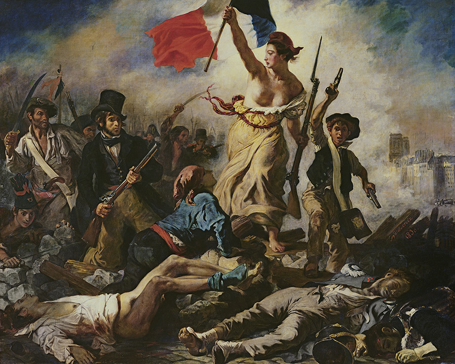
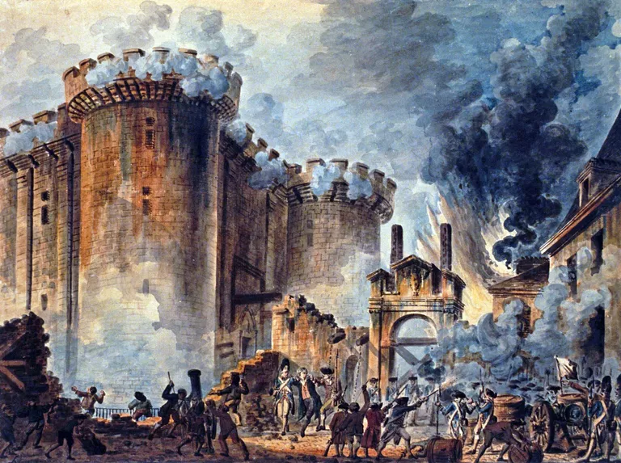

¡Bienvenido al Rincón Francés!
Un blog para aprender sobre el idioma, su aura, su cultura, sus curiosidades y su historia.




Explora la historia del idioma
Comprende su gramática

Todo y más, en el Rincón Francés
{{randomPhrase.phrase | Cite}}
{{randomPhrase.author | CiteAuthor}}
{{randomPhrase.author | CiteAuthor}}

Hecho en Vue.js
¿Qué es Vue.js?
Ir a la web de Vue.js
Copyright 2020. Todos los derechos reservados.